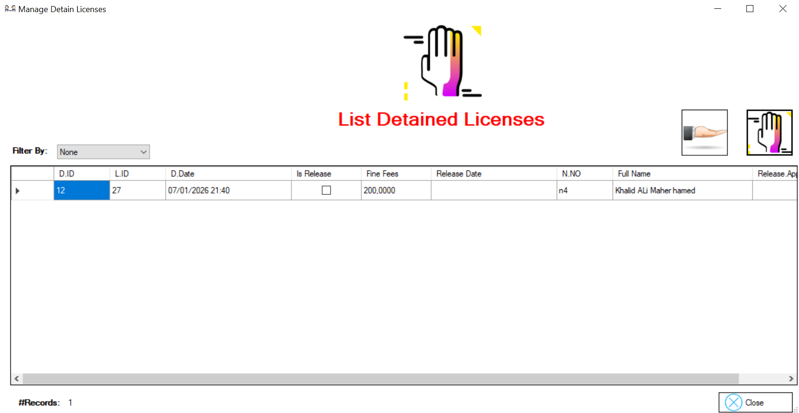
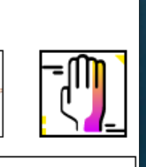
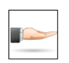
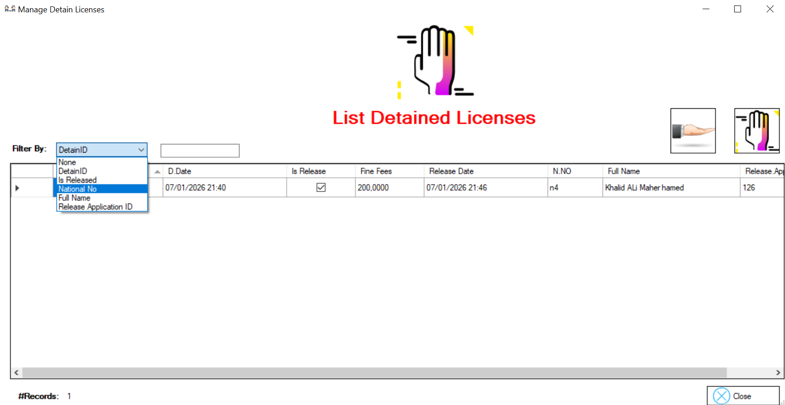

Si vous souhaitez bloquer un permis de conduire, rendez-vous dans l'onglet « Mange Detained License ».
Sur cet écran apparaît la liste des permis retenus. Vous pouvez cliquer sur le bouton « Detain » pour retenir un permis ou sur le bouton « Release » pour le libérer.

bouton Detain

bouton Release

Sur cet écran apparaît la fonctionnalité de filtrage par :Detain ID, Is Release, National No, Full Name, Release Application ID

Sur cet écran apparaît la liste du contexte. Elle se compose de :Show Person Details, Show License Details, Show Person License History, Release Detain License

Lorsque clique sur context Show Details Ce formulaire affiche les informations de la personne et comporte un lien permettant de modifier ces informations.

Sur cet écran, il apparaît le permis de conduire retenu.

Cet écran affiche l'historique des licences : toutes les licences sont visibles, une licence est sur le point d'expirer, une autre a été déclarée perdue et une est active.

Sur cet écran apparaît l'interface de licence de publication